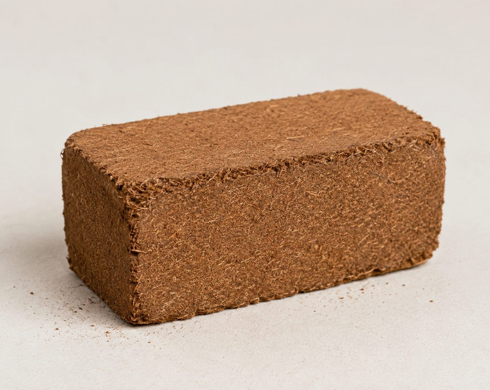
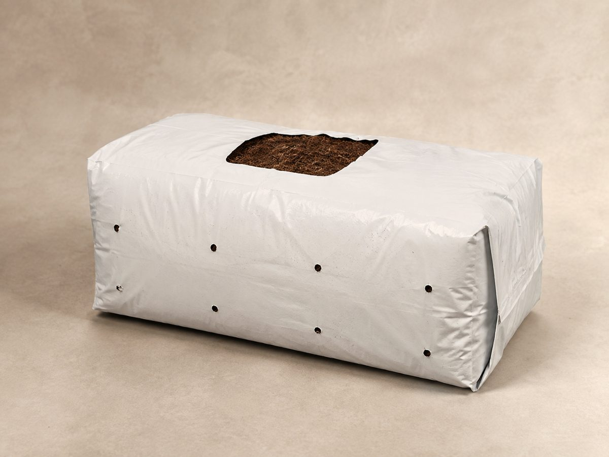
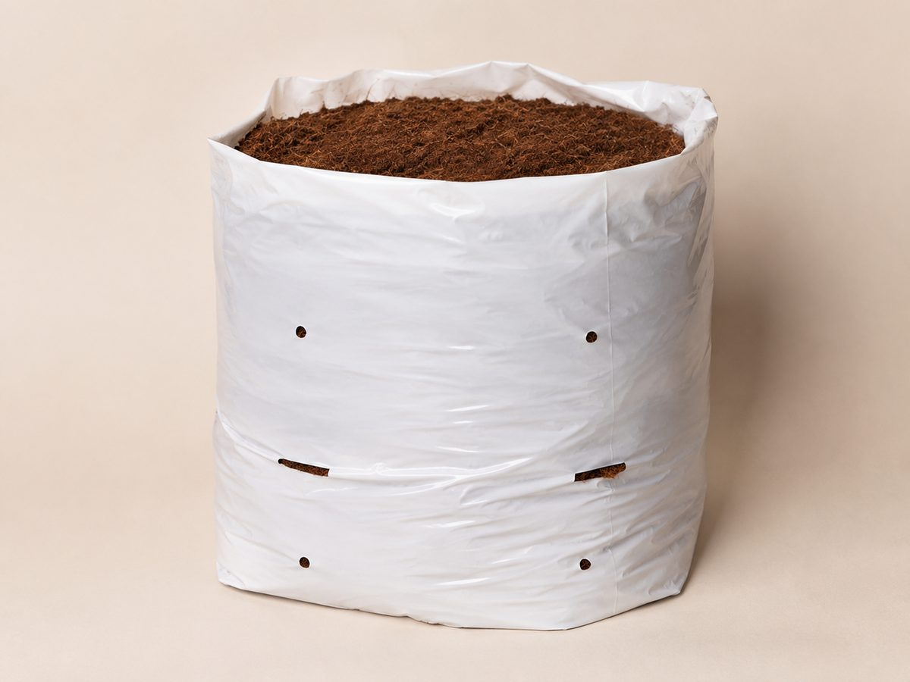
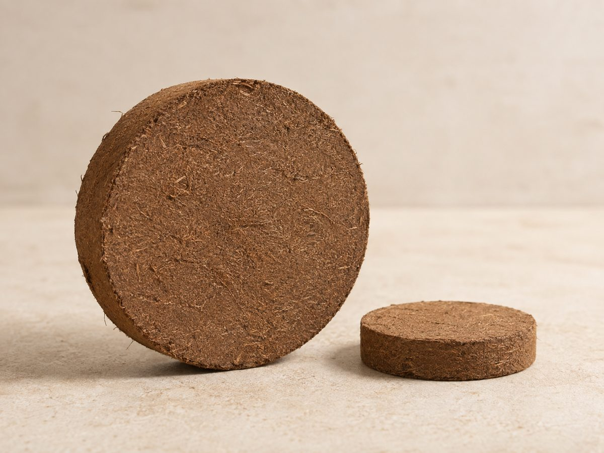
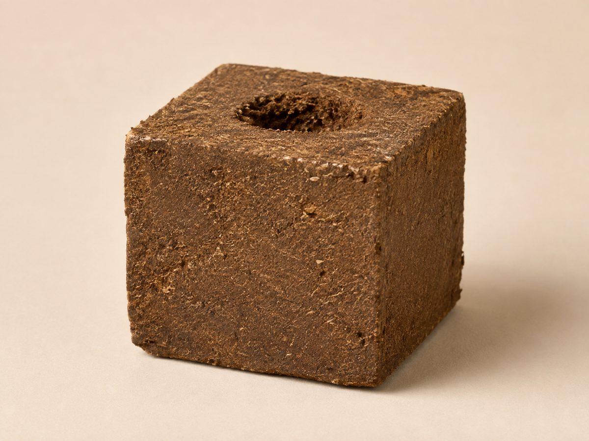
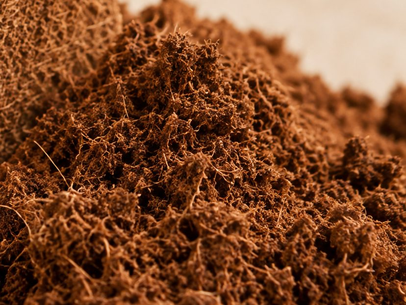
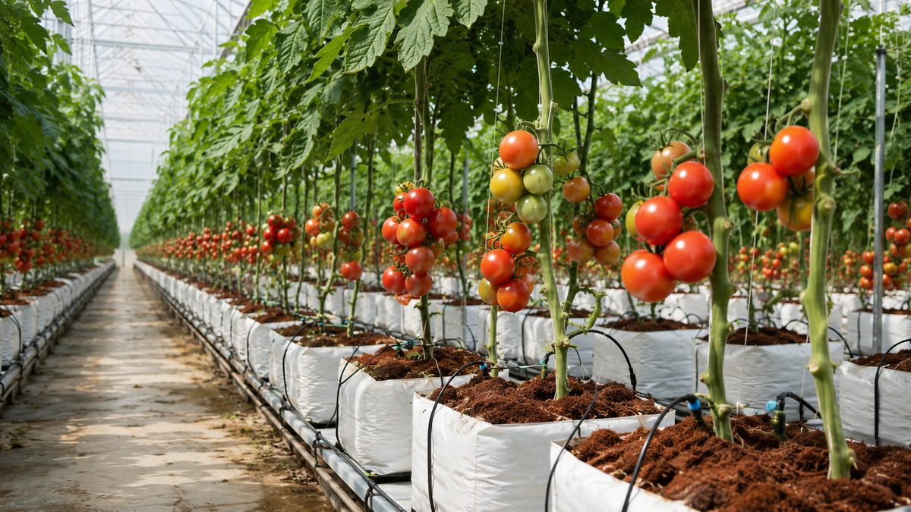

Packing listSeven formats
Formats
The same material, pressed for different jobs. Which one you want depends on whether you are reselling it, filling pots with it, or growing in it directly.
- Also called
- Cocopeat
- HS heading
- 5305
- Origin
- India
- Marks
- To buyer's spec

Compressed block
The format most bulk cocopeat moves in, and the one to ask about first if you are filling a container. A 5 kg block is dense enough to ship economically and still light enough for one person to lift at the far end.
Blocks are palletised, wrapped and strapped. Whether we palletise or floor-load depends on your quantity and what your port and warehouse can take, so we agree it before production rather than at the yard.
Bought by — importers · repackers · substrate blenders
Compressed briquette
The retail-facing compressed format. Small enough to sit on a shelf in a printed sleeve, dense enough to ship in volume, and the usual starting point for anyone building a private-label range.
Cartoning, sleeve printing and carton marking are all done to your artwork and your specification.
Bought by — repackers · private label · garden retail


Grow slab
A compressed slab inside its own wrap, with planting windows cut into the top face. It goes straight into a gutter, takes up water through the drip line, and is grown in as it sits.
Slab length, wrap colour, window pattern and drainage cuts are all specified per order, because they follow the crop and the gutter rather than a standard.
Bought by — greenhouse growers · horticultural distributors
Open-top grow bag
Filled, perforated and ready to place. The bag arrives with the medium already in it, so there is no hydration station to run and no loose material to handle on the bench.
Fill volume, bag height, perforation and drainage are set per order. This is the format to ask about if your labour is the constraint rather than your freight.
Bought by — nurseries · greenhouse growers


Compressed disc
A round compressed format that swells to fill a pot or a tray cell without being broken up first. Useful where the medium has to go into a container of a known size and the labour has to stay simple.
Available in more than one diameter. Which one suits you is a function of your pot, so tell us the pot.
Bought by — garden retail · nurseries · repackers
Propagation cube
A compressed cube with a planting hole already formed in the top, for striking cuttings and raising young plants before they are moved on.
Cube dimension, hole size and the screening of the pith inside it are specified per order. Propagation is the least forgiving use of cocopeat, so this is the format where washing and buffering matter most.
Bought by — propagators · nurseries


Loose pith
Screened, uncompressed pith, bagged for buyers who are blending it into their own substrate rather than selling it on as it is.
Freight is the trade-off: loose material costs more to move per tonne of dry weight than a compressed block does. It is worth it when your process cannot accommodate a hydration step.
Bought by — substrate manufacturers · blenders
SpecificationConfirmed per order
There is no specification table on this site, and that is deliberate.
Figures that move with the processor, the season and the batch are worth nothing printed on a website. They are worth something on an analysis with your order number on it.
So this is the list of what gets pinned down before you buy. Send us the ones you have a requirement on, and we will come back on the rest.
- Electrical conductivity
- Agreed as a ceiling before production and confirmed on the batch analysis.
- pH
- Reported on the same analysis. Tell us the crop if you have a target range.
- Moisture
- Checked at the point of compression, because it drives both weight and expansion.
- Expansion
- Stated as a volume from a stated unit weight, for the batch you are buying.
- Washing
- Unwashed, washed or double-washed, depending on where the salt has to end up.
- Buffering
- Available where the crop needs it. Named per crop, not sold as a grade.
- Screening
- Particle grade to your requirement, including chip and blend ratios.
- Unit weight
- Nominal weight per block, briquette, slab, disc or cube, and the tolerance on it.
- Packing
- Wrap, carton, sleeve or bag, printed to your artwork where you want it.
- Pallet plan
- Units per pallet, pallet type, wrap and strapping, or floor-loaded.
- Shipping marks
- Printed to your specification. Send us the marks you use.
- Loading
- Quantity per container, port of loading, and the Incoterm you work on.
Issued or arranged with every shipment, to whatever your bank and your customs require.
- Commercial invoice
- Packing list
- Bill of lading
- Certificate of origin
- Batch analysis
- Phytosanitary, where required
- Fumigation, where required
- Insurance, on CIF terms
ApplicationWhere it ends up

Professional growers, not window boxes.
Cocopeat earns its place in greenhouse and nursery production because it holds water and air at the same time and behaves predictably under a drip line. That is the market this material is graded for.